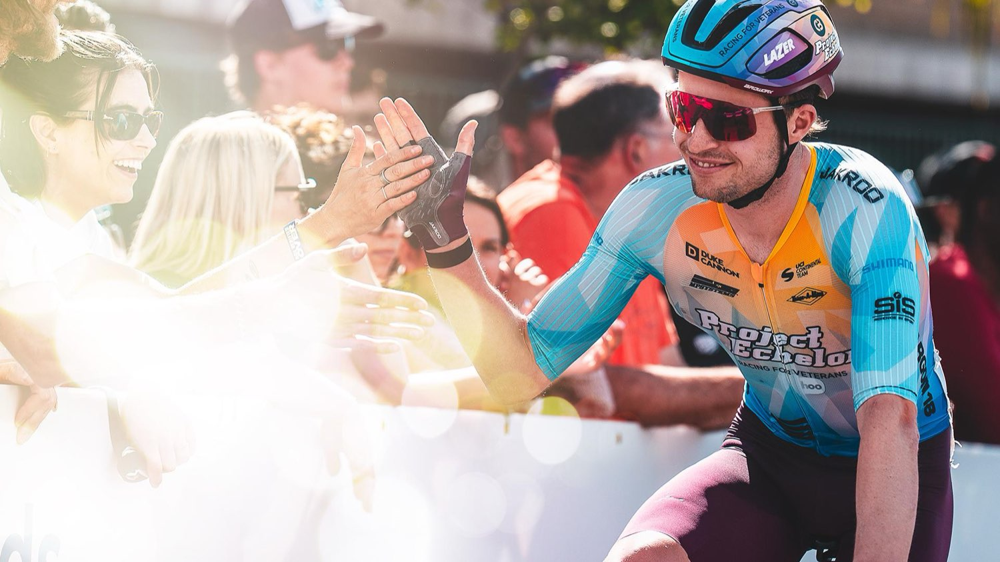
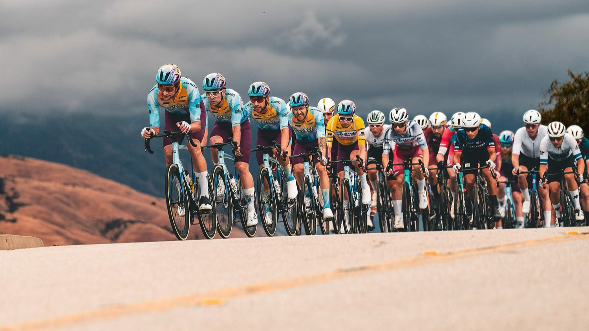
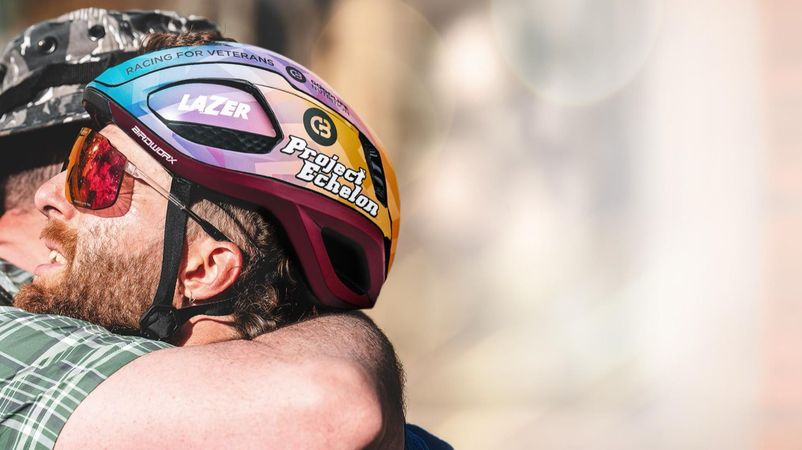

Educate
We're expanding coach training to better support veterans, including suicide prevention training with certified medical professionals.
13Veteran non-profit partners
32States active
Results checked against ProCyclingStats and race reports, November 2026.
UCI Continental team / 501(c)(3) / Waukesha, Wisconsin
A UCI Continental pro team and a veteran non-profit, run as one. The racing brings in the partners who back our veterans.
Scroll
Fig. 01 / Crosswind
It's called an echelon.
The four bars on the jersey are cut to that angle.
Fig. 02 / The 2027 roster

Fig. 04 / Kit and equipment
Every partner on the kit has a tag. Tap one and its code drops into your musette, ready for when you shop.

Fig. 05 / Stage profile, schematic
Fig. 06 / The name
Leaving the service can feel like riding into a crosswind on your own.
In an echelon, riders line up on a diagonal across the road. Each rider's front wheel sits beside the back wheel ahead, out of the wind.
New members start in the shelter of the line, matched with one of our pro riders. In time, they take their own turn at the front.
When Project Echelon was founded in 2016, an average of 22 veterans a day died by suicide. Today that number has fallen to 17.
Progress has been made. The work is far from over. The 22 on every jersey reminds us why we ride.
Fig. 07 / What we do for veterans
We're expanding coach training to better support veterans, including suicide prevention training with certified medical professionals.

Bikes and scholarships get veterans started. Miles on a Mission brings them to international cycling events.

Cycling gives veterans a routine. The team gives them people to ride with.
"As soon as I completed the initial contact form, Hugo, one of the professional riders, called me."Allison
Fig. 08 / The first month
Every new member starts in the shelter of the line. Here's the first month, step by step.
Start with the contact formTell us a little about yourself.
You get resources to read and a few first tasks.
Work through our goal-setting course. Then fill in a reflective survey and an interest inventory.
We put you in touch with one of our pro riders, based on where you live.
You and your rider meet and plan the next steps around your goals.
You get our Google Classroom and member benefits from our partners. You're also invited to our private Facebook group.
Your first group call will likely be our Monthly Muster, held online.
Fig. 09 / Partners / Winning beyond sport
Our partners put their names on a team with 160 race days across North America and Europe, in 29 states and 8 countries. All of it is for veterans.

Race coverage, 2026
Fans find every partner's code in the musette, one tap away on every page.
Sponsorship and donations are separate routes
Fig. 10 / Find your place in the line
Search the whole site, or go straight to a page.